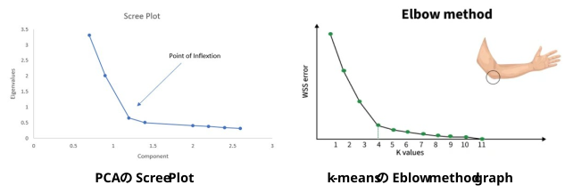

PCA の Scree Plot: https://en.wikipedia.org/wiki/Principal_component_analysis
k-means の Elbow法グラフ： Elbow Method for optimal value of k in KMeans
似ている･･･
「スクリープロット（scree plot）」の scree（スクリー）とは、地質学の用語で「山の斜面にたまった岩屑（がんせつ）」や「がれ場（崩れ落ちた岩石がゴロゴロと積み重なった急斜面）」を意味します。
このグラフは、各主成分の固有値（情報量・分散の大きさ）を大きい順に並べたものです。その形状が、「崖から崩れ落ちた岩石が、山の麓に緩やかに積み重なっている斜面」に見えることから、1966年に統計学者のレイモンド・キャッテル（Raymond Cattell）によって名付けられました
スクリープロットを使った分析では、グラフの傾きが急激に下がったあと、平坦（なだらか）に変化する境界点を探します。
・崖（急斜面）: 情報量が大きく、分析に残すべき重要な主成分
・がれ場（緩斜面 / スクリー）: 情報量が少なく、本質的ではない「誤差」や「ノイズ」の集まり
k-means法（k平均法）などのクラスタリングアルゴリズムにおいて、データをいくつのグループ（クラスター数 k）に分けるのが最も適切かを視覚的に判断するための代表的な手法です。
グラフを描いたときに、「人間のひじ（Elbow）」のようにポキッと曲がる点があることからその名がつけられました。
手順
「スクリープロット」と「エルボー法のグラフ」は、見た目も本質的な考え方も非常によく似ています。
どちらも統計学や機械学習において、「これ以上要素（主成分やクラスター）を増やしても効果が薄い、最適な境界点（コストパフォーマンスが良い点）」を視覚的に見つけ出すための手法だからです。
グラフの形はそっくりですが、「何をプロットしているか（縦軸の意味）」が真逆になっています。 \[ \begin{array}{l | l | l} \textbf{項目} & \textbf{PCAのスクリープロット} & \textbf{k-meansのエルボー法グラフ} \\ \hline \textbf{やりたいこと} & \text{データの次元を減らす} & \text{データをグループに分ける} \\ \hline \textbf{横軸} & \text{主成分の番号} & \text{クラスターの数} \\ \hline \textbf{縦軸} & \text{固有値(分散・情報量)} & \text{クラスタ内平方和} \\ \hline \textbf{縦軸の性質} & \text{各主成分がもつ「価値」} & \text{クラスタリングの「損失・エラー」} \\ &\text{(プラスの要素)} & \text{(マイナスの要素)} \end{array} \]